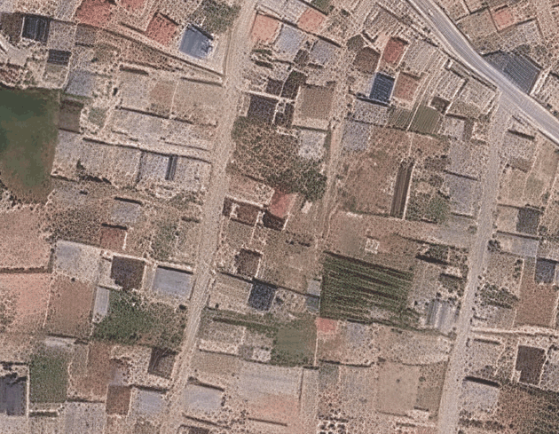

Key points from reference and source are connected
A transformation function, the homography, is computed from the matched points.

Filters the field of homographies instead of the matches.
Pixels are projected through the homography transformation function.